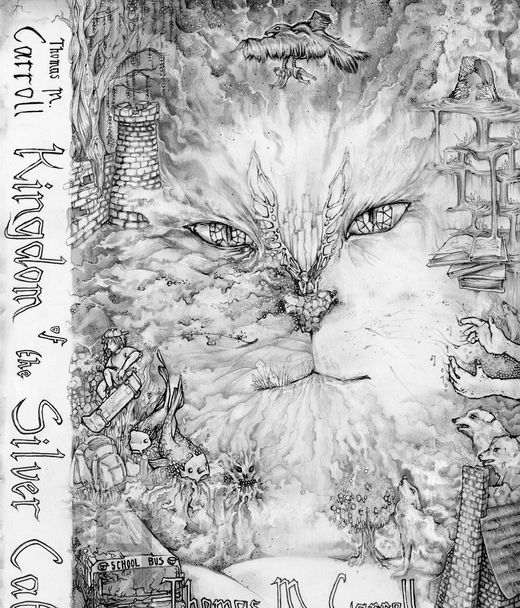
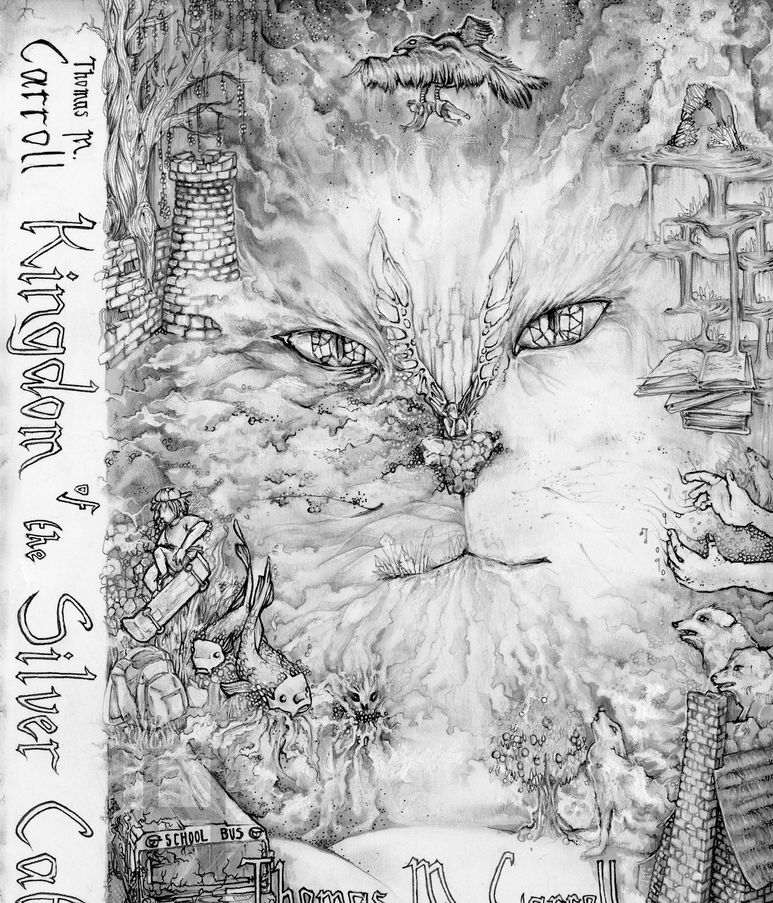

Ink and Pencil on Paper
Ink and Pencil on Paper
The goal of this project was to create an illustrated cover for Tom Carroll’s unreleased children’s novel, Kingdom of the Silver Cat. The novel is geared for children in grades 4-12. The project includes the cover development and iterations. Further projects for the Kingdom of the Silver Cat include digital development of the cover and additional illustrations for posters and chapter illustrations.


The Author, Tom Carroll, wanted a cover that would appeal to kids as well as effectively capture the mystique, intelligence, and power of the Silver Cat, which is a powerful being in his story.
The cover was developed using pencil and ink. different parts of the cover show different scenes and events that occur throughout the book.
 
